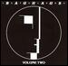
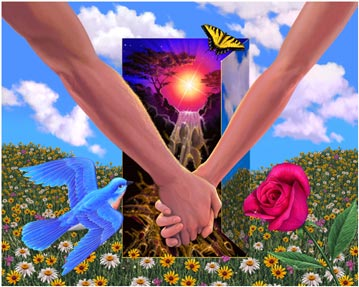
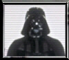

Forums galactiques > Taverne galactique : lieu de discussion informel > salle des fêtes
Pages : 1 2 ... 4 5 6 ... 14 15
khornes 10/01 ETU 19:16 | C'est beau hein? Les mariés nous laisse seul,donc on sacrifie les serviteurs..En l'honneur des amriés bien sur..par contre je sais pas qui c'est occupé de leur fournir les serviteurs et la salle,mais il va gueuler.. |
| Babar  10/01 ETU 20:01 | Tout d' abord, mes excuses pour ce contre temps, j' ai fait tirer une salve ionique en votre honneur au meme moment ou, mon croiseur décollait pour venir ici ... ;( Toutes mes félicitations. Longue vie à tout les deux. ps:mes avocats sont toujours là, en cas de coup dur. Je vois que je suis un peu en retard (coup d' oeil discret vers les alcools). Ha non, tout va bien, je vais de ce pas, porter un toast aux mariés. |
| lolita  10/01 ETU 20:05 | Avant de porter le toast il faut que les mariés fassent un discour !!! |
Maedhros 10/01 ETU 20:07 | *Maedhros arrivat bien tard en criant des insultes a un pauvre chauffeur de taxi* Bonsoir, exusez moi de ce leger contre temps... Babar j'ai un taxi a ioniser, sa te tente? Bon comme tout le monde: Longue et joyeuse vie à Hinata et au Libé. |
Babar10/01 ETU 20:12 | Un taxi ? ne bouge pas, je vais chercher 2 BHA ... Pour le toast qui doit attendre le discours ... désolé, j' ai déjà fini mon verre ... je vais me reservir ;) |
glorfindel 10/01 ETU 20:34 | bon mariage! |
El-tibaldo10/01 ETU 20:47 | Je vous souhaite toutes mes félicitations, j'espère que vous vivrez heureux pendant longtemps, et ... Euh...le buffet est gratuit? Ah d'accord bon bah jvais me servir à boire de ce pas. Glou glou glou. AH sa ravigote! Ou j'en été,... ah oui, longue vie à vous et à votre décendance (mettez vous y vite au boulot et sa viendra). Bon, ceci fait, je retourne me servir. |
Maedhros10/01 ETU 20:55 | Merci Babar. On peut touj...souvent compté sur toi. Tiens, que vois je? Un buffet?!Il me semblait bien avoir oublié de faire quelque chose. *Mae partie donc faire honneur ce magnifique buffet* Au fait Bravo Kev. Mais ne deviens pas un Bizounours. Je n'aurait plus personne avec qui m'engeuler (sauf le Libé) |
Improved Carnage 10/01 ETU 20:59 | " wééééééééééééééééé , félicitation au nouveau mariés !!!!! je vous souhaite tous mes voeux de bonheur , et faite plein de bébé commandants !!! désolé pour le retard , j'ai eu un problème en route mon croiseur amiral est tombé en panne . Et j'ai du sauvée une charmante femelle d'un animal sauvage " . |
maiwena10/01 ETU 21:41 | Félicitations aux nouveaux mariés, tous mes voeux de bonheur. |
| M.X.  10/01 ETU 22:26 | Avec si peu de retard, un... un impondérable :/, félicitation aux mariés ;) |
Hinata11/01 ETU 08:26 | /Hinata arriva, l'air extrèmement fatiguée mais aussi extrèmement heureuse./ Merci à tous, mes amis. Au fait, IC je ne connaissais pas ton penchant pour les animaux.... |
Le Liberitage11/01 ETU 09:17 | *son eternelle rictus sarcatistique au visage, quoi que légèrement teinté de bonheur, le Liberitage se moqua * Je crois qu'il s'est associé à Tito pour la protection des lapins nains, d'ailleur... Merci à tous. |
Hinata11/01 ETU 09:30 | pauvres bêtes.... |
lolita11/01 ETU 09:31 | Surtout pour le 0.5 |
Hinata11/01 ETU 09:32 | quel 0.5 ? j'ai du rater un truc.. (Cheri t'as un MP) |
lolita11/01 ETU 09:34 | Il faut un 0.5 lapin nain et tito ne savait pas comment faire le 0.5 !! |
Le Liberitage11/01 ETU 09:38 | Avec un clavier, faire un 0.5, c'est pourtant simple... (J'ai répondu à ton MP, mon aimée) |
Hinata11/01 ETU 09:38 | mais Tito n'est pas doué... surtout depuis qu'il s'est mis un torchon sur la tete! (c'est vu, coquin!) |
Le Liberitage11/01 ETU 09:42 | Mais... Mais... C'était pour ne pas faire peur aux lapins nains, justement !!! (wahu...) |
Pages : 1 2 ... 4 5 6 ... 14 15
Forums galactiques > Taverne galactique : lieu de discussion informel > salle des fêtes